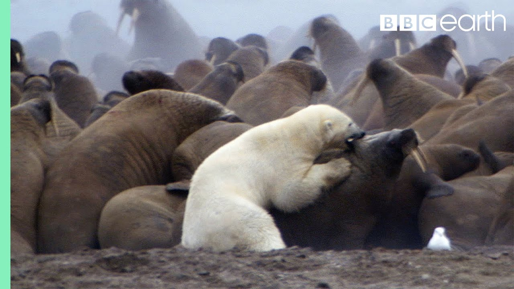

【北极熊对战海象 | 地球脉动 | BBC地球】
Summary: Exhausted from swimming, the polar bear must regain strength. The next day, sea fog shrouds the island. The walruses sense danger and use the fog as cover. The bear approaches the herd. The adults protect their young, forming a wall of blubber and hide. The bear tests the barrier, but it holds firm. The world's largest land carnivore seems outmatched. The bear searches for a weak spot. A female walrus shields her pup. The bear's claws and teeth can't pierce her thick hide. The herd retreats to the water, forcing the bear to act quickly. Failing with one walrus, he targets another. His chance for a meal slips away. Growing desperate, he avoids stabbing tusks. The powerful walrus drags him away from the shallows. It escapes his grasp.
摘要： 游泳后精疲力竭的北极熊必须恢复体力。第二天，海雾笼罩岛屿。海象察觉到危险，利用雾气掩护。熊靠近象群。成年海象围护幼崽，形成脂肪和厚皮的屏障。熊试探障碍，但无法突破。世界上最大的陆地食肉动物似乎无计可施。熊寻找弱点。一头雌海象护住幼崽。熊的爪牙无法刺穿其厚皮。象群退回水中，迫使熊快速行动。失败后，他转向另一头海象。进食机会逐渐消失。愈发绝望的他躲避刺来的长牙。强壮的海象将他拖离浅水区。猎物最终逃脱。

⏱️ Estimated Reading Time: 1 min
📚 高考3500生词 📚 雅思生词 📚 托福生词 📚 GRE生词 📚 UP主推荐生词
Exhausted from his swim the bear must regain his strength.
游泳后精疲力竭的北极熊必须恢复体力。
The next day a sea fog shrouds the island.
第二天，海雾笼罩岛屿。
The Wallace is sense that they're in danger using the fog as cover.
海象察觉到危险，利用雾气掩护。
The bear approaches The Herd.
熊靠近象群。
The adults close ranks around their young presenting a wall of blubber and hide.
成年海象围护幼崽，形成脂肪和厚皮的屏障。
He tests the barer but it stands firm.
熊试探障碍，但无法突破。
It appears that the world's largest land carnivore has met his match.
世界上最大的陆地食肉动物似乎无计可施。
There must be a in the armor somewhere.
熊寻找弱点。
Not here this female walrus is shielding her pup.
一头雌海象护住幼崽。
If he can just prize her off the bear's claws and teeth can't penetrate her thick hide.
熊的爪牙无法刺穿其厚皮。
With the herd retreating to water the bear must move quickly.
象群退回水中，迫使熊快速行动。
Having failed with one he heads straight for another.
失败后，他转向另一头海象。
The chance of his first meal in months is slipping away.
进食机会逐渐消失。
He seems increasingly desperate.
愈发绝望的他躲避刺来的长牙。
It's now or never he must avoid the stabbing tusks if he's the win.
成败在此一举，他必须避开刺来的长牙。
The flailing walrus is immensely powerful and drags the bear away from the shallows towards the safety of the herd.
强壮的海象将他拖离浅水区。
It slips from his grasp.
猎物最终逃脱。